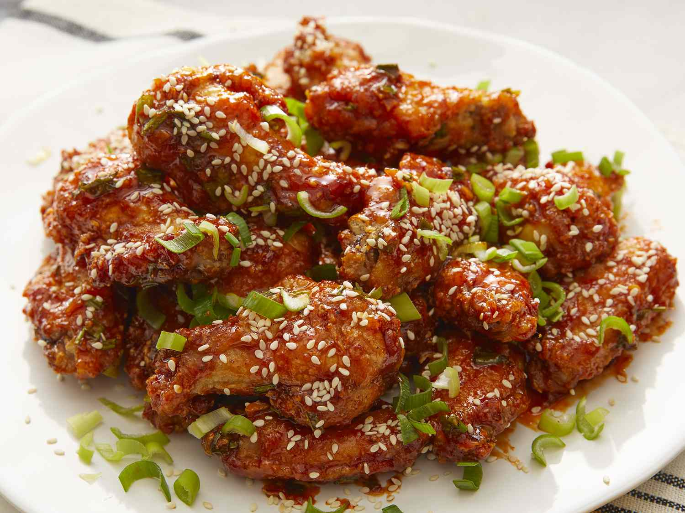

Korea chicken wings recipe

Description
Cook an exotic yet easy dinner like these spicy and sticky Korean chicken wings. They make ideal finger food for a buffet, but don't forget the napkins
Ingredients
For the chicken
- 500g chicken wings
- large chunck of ginger, finely grated
- 50g cornflour
- vegetable oil, for frying
- sesame seeds and sliced spring onion, to serve
For the sauce
- 6 tbsp dark brown sugar
- 2 tbsp gochujang (Korean chilli paste)
- 2 tbsp soy sauce
- 2 large garlic cloves, crushed
- small piece ginger, grated
- 2 tsp sesame oil
Steps
- To make the sauce, put all the ingredients in a saucepan and simmer gently until syrupy, so around 3-4 mins. Take off the heat and set aside.
- Season the chicken wings with salt, pepper and the grated ginger. Toss the chicken with the cornflour until completely coated.
- Heat about 2cm of vegetable oil in a large frying pan over a medium/high heat. Fry the chicken wings for 8-10 mins until crisp, turning halfway. Remove from the oil and place on kitchen paper. Leave to cool slightly (around 2 mins).
- Reheat the sauce, and toss the crispy chicken wings in it. Tip into a bowl and top with the sesame seeds and sliced spring onions.